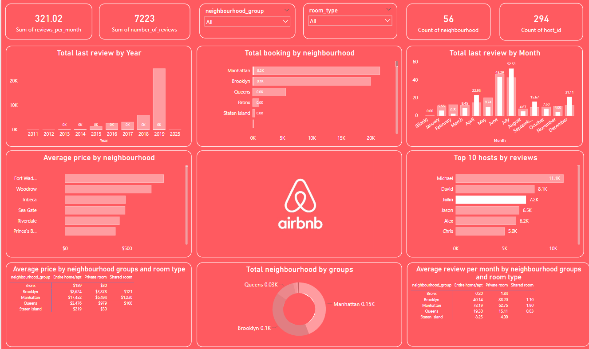

Airbnb Dashboard
Data Analysis | Power BI, Excel | 2024
About the Project
This interactive dashboard was created to analyze Airbnb listings data and uncover insights related to pricing, occupancy, and review patterns. It helps in identifying trends across different locations and room types to guide investment decisions.
Key Features
- Visualized key metrics like availability, pricing, and review scores
- Interactive filters by location, room type, and date
- Identified top-performing areas using heatmaps and KPIs
- Cleaned and prepped raw data in Excel before importing to Power BI
My Role
As the sole analyst for this project, I:
- Cleaned and transformed Airbnb data using Excel
- Created multiple Power BI visualizations (bar charts, maps, filters)
- Focused on UX by structuring the dashboard for easy insights
- Used conditional formatting to highlight key values dynamically
Tech Stack
Power BI
Excel
Dashboard Screenshot
